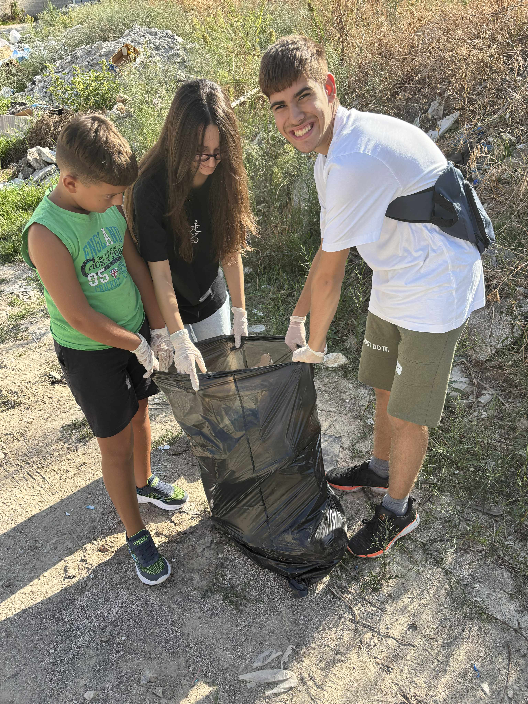
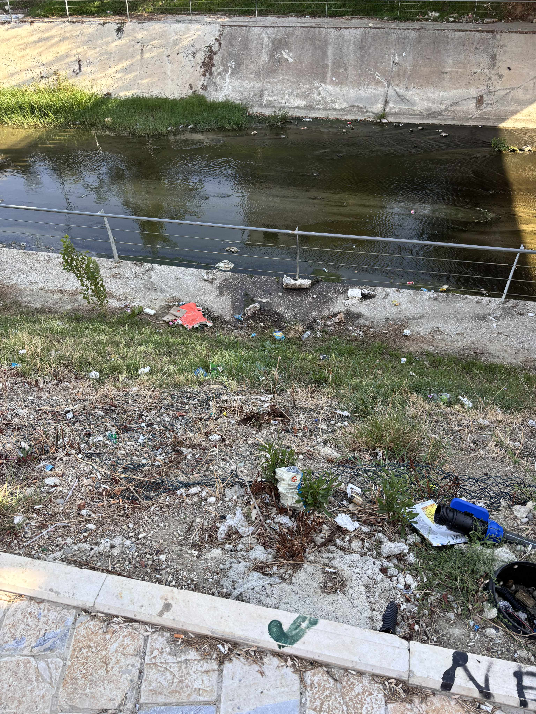
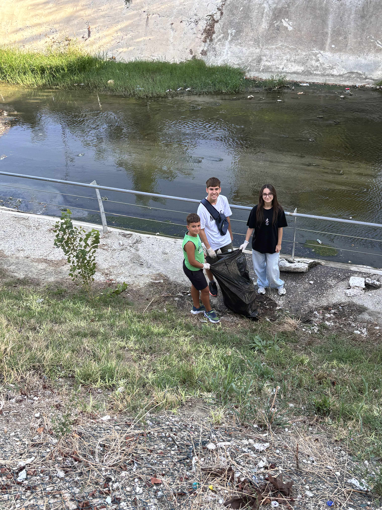

Sometimes change begins with something small — a walk to the riverbank, a few cousins on bicycles, and two trash bags.
When I returned to Fier this summer, I couldn’t ignore the trash scattered along the riverbank. It was the same place my younger cousins played every day. Instead of preaching, I proposed an “adventure.” We grabbed gloves, jumped on our bikes, and set out to clean the area together. Within an hour, we filled two large bags. The kids wore their gloves proudly, and on the way back, they told me it was the first time they thought about what it means to take care of their city.
That day, I understood something powerful: our actions create precedents. When we throw trash on the ground, we normalize neglect. But when we pick it up, we normalize care. Terratoka was born from this belief. By creating meaningful eco-adventures, we want to set positive precedents for communities, travelers, and future generations.
This was just the first step — a small action, but one with ripples. Terratoka will continue to build on this momentum through cycling trips, eco-work, and cultural immersion across Albania and beyond.